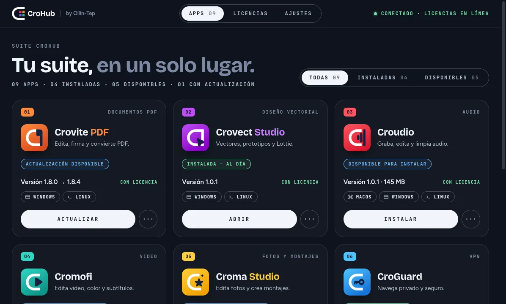
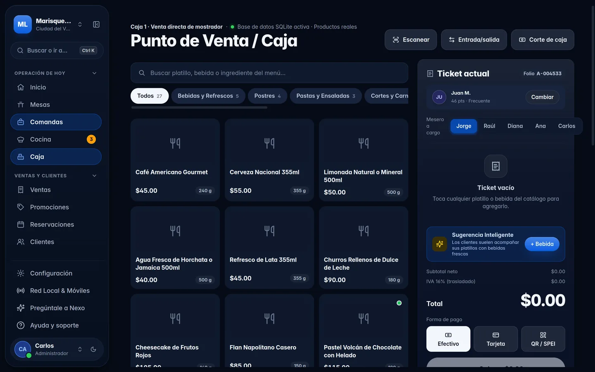
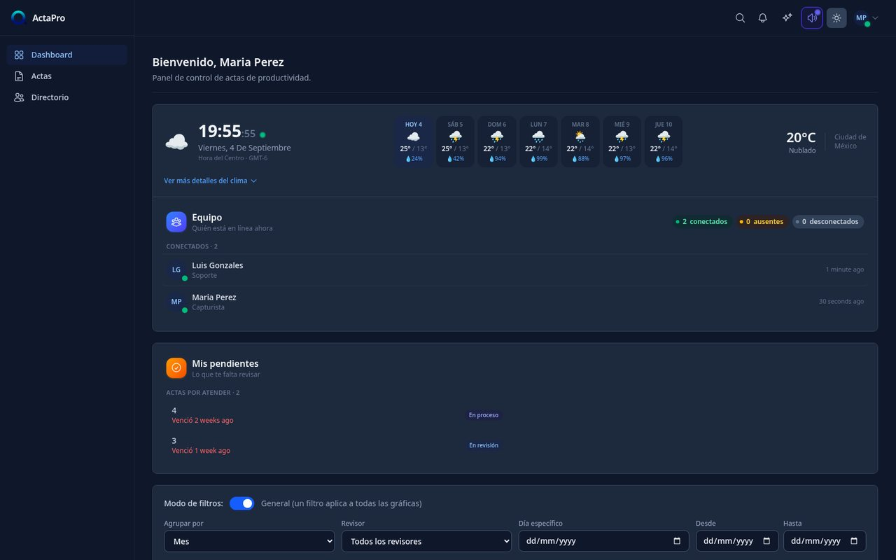
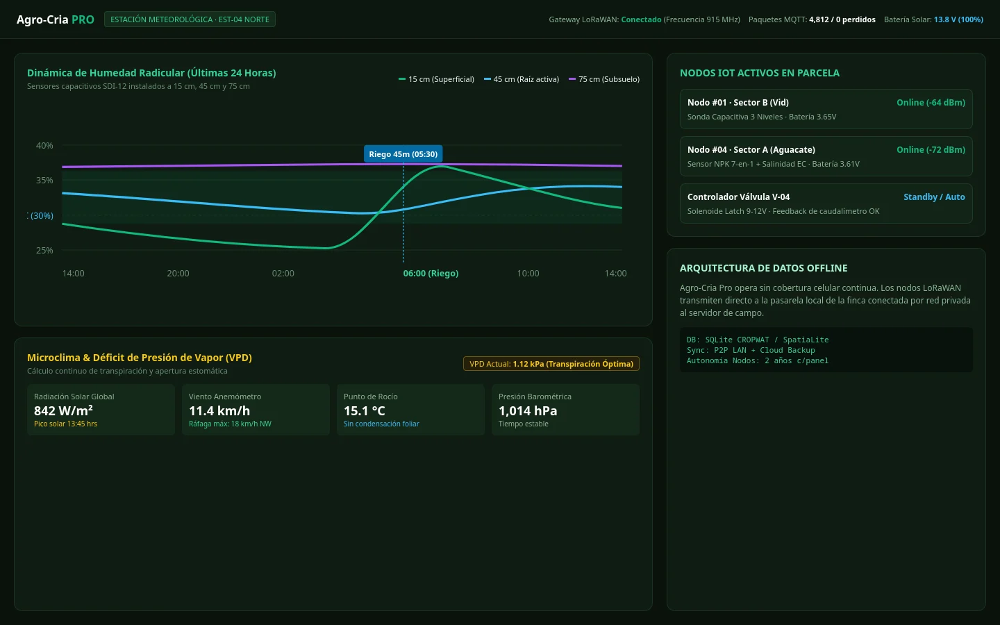
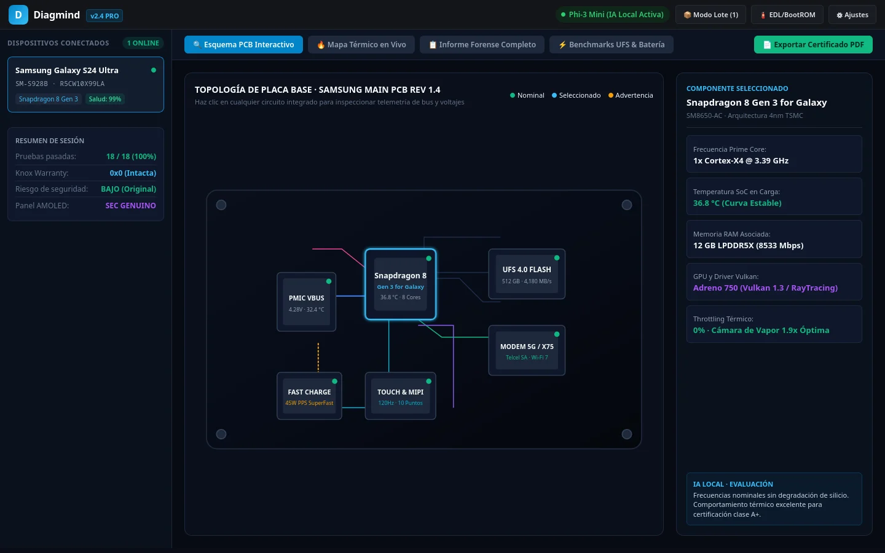
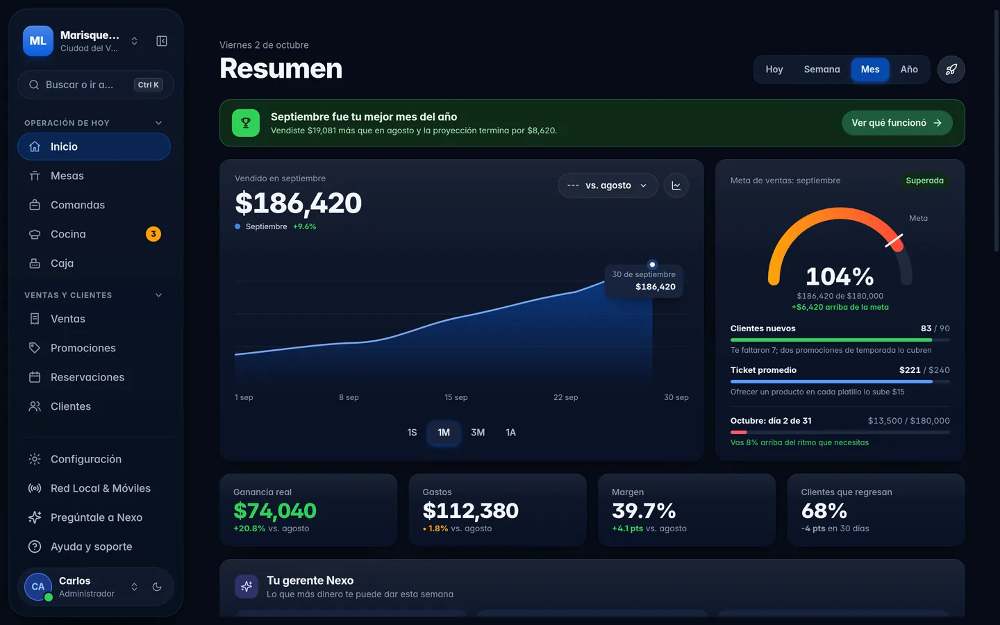
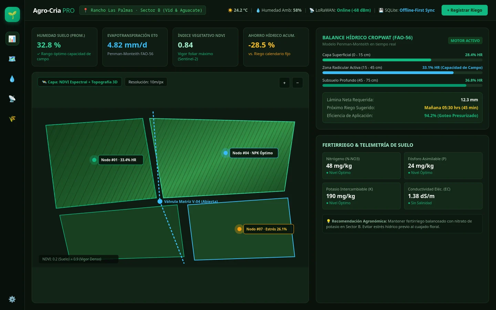
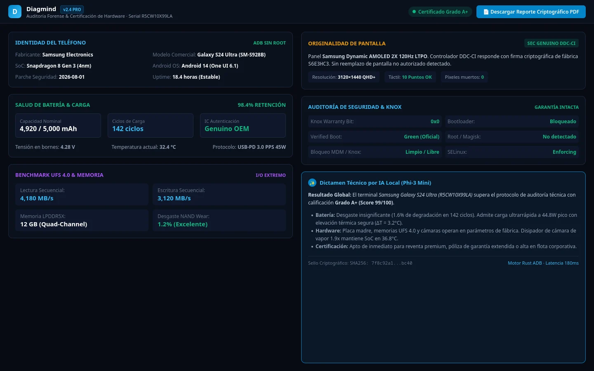

Para tu equipo
Suite CroHub
Nueve apps para documentos, fotografía, video, audio, música y seguridad. Un solo lanzador las instala, actualiza y activa.
Ollin-Tep Software · Tepic, Nayarit, México
Somos un equipo de ingenieros de software y diseñadores. Desarrollamos la suite CroHub y plataformas a medida, creamos identidades de marca, diseñamos infraestructura de red y brindamos soporte técnico especializado.
Para tu equipo
Nueve apps para documentos, fotografía, video, audio, música y seguridad. Un solo lanzador las instala, actualiza y activa.
Para tu negocio
Puntos de venta, gestión de actas, agricultura de precisión y diagnóstico de dispositivos: plataformas probadas que adaptamos a tu operación.
Cuidamos cada pantalla, cada animación y cada línea de código como si fuera lo único que vas a ver de nosotros. Porque a veces lo es.

CroHub
Un lanzador descarga, instala, actualiza y activa las nueve apps de la suite.

Centzontle
Caja, mesas, cocina e inventario en un punto de venta para muchos giros.

ActaPro
Gestión de actas con el equipo conectado y lo pendiente a la vista.

Agro-Cria
Agricultura de precisión con datos de tus sensores.

Diagmind
Diagnóstico de dispositivos, capa por capa.

Suite CroHubCroHub descarga, instala, actualiza y activa cada app. Compra solo las que necesitas o el paquete completo.
Descargar CroHubDocumentos PDF
Edita, firma, convierte y organiza tus documentos PDF.
Fotos y montajes
Capas, color, fondos quitados con IA, revelado con preajustes y collages para redes.
Fotos y color
Edición de fotos y corrección de color.
Diseño vectorial
Diseño vectorial, prototipos de interfaz y animación Lottie.
Video
Edita video, corrige el color y pon subtítulos automáticos.
Audio
Graba, edita y limpia audio.
Música
Crea ritmos y produce música.
Música y DJ
Mezcla como DJ: 4 platos, efectos, stems, sampler y controladoras.
VPN
VPN, antivirus y herramientas de red para proteger tu equipo.
Prueba el lanzador: instala la suite.Nueve apps listas. Ahora hazlo de verdad.
Software a medida
Partimos de sistemas probados en su sector y los ajustamos a cómo trabaja tu equipo.

Punto de venta multigiro: caja, mesas, cocina, inventario, crédito y citas, para restaurantes, abarrotes, farmacias, boutiques, talleres y más.
Conocer la plataformaAsambleas, actas administrativas, votaciones y auditoría de trámites con historial inmutable.
Conocer la plataforma
Balance hídrico FAO-56 (CROPWAT), trazabilidad ganadera, cultivos y telemetría de suelo por IoT.
Conocer la plataforma
Diagnóstico profundo de dispositivos Android por ADB, sin root, con telemetría e IA local para técnicos.
Conocer la plataformaAplicaciones web, móviles y de escritorio a medida, con arquitecturas limpias y seguras pensadas para crecer con tu negocio.
Revisamos infraestructura, procesos y deuda técnica para que adoptes la tecnología correcta sin improvisar.
Automatización de flujos de trabajo y migración a infraestructuras confiables, por etapas y sin detener tu operación.
Diseño
El mismo equipo que desarrolla tu sistema diseña tu identidad visual: una marca coherente en pantalla, en impresos y en cada campaña.
Diseño de logotipo desde cero o rediseño del actual, con versiones optimizadas para pantalla e impresión.
Paleta de color, tipografía y manual de uso para una imagen consistente en todos los canales.
Piezas para redes sociales, carteles, lonas e impresos, alineadas con los objetivos de cada campaña.
Interfaces de apps y sitios web centradas en el usuario, con el mismo estándar que aplicamos a nuestra suite.
Redes e infraestructura
Diseñamos, implementamos y configuramos la infraestructura de tu empresa: servidores, VLANs, switches, routers, firewall y conectividad inalámbrica.
Planear mi redTopología y documentación técnica de tu infraestructura antes de instalar el primer equipo.
Instalación, configuración y puesta en marcha de servidores conforme al plan acordado.
Segmentación de la red para aislar caja, oficinas, videovigilancia e invitados.
Configuración de equipos de red estable, eficiente y fácil de administrar.
Protección del perímetro y acceso seguro para sucursales y personal remoto.
Cableado estructurado y cobertura inalámbrica planificada según cada espacio.
Servicio técnico
Armado de equipos, mantenimiento de hardware y actualización de firmware, con el mismo rigor que aplicamos al software.
Pedir servicio técnicoEnsamblado de equipos a la medida de tu trabajo, con componentes seleccionados y probados.
Mantenimiento de computadoras y servidores para prolongar su vida útil y prevenir fallas.
Diagnóstico, limpieza y mantenimiento de todo tipo de hardware.
Actualización de firmware para mejorar la seguridad, la estabilidad y la compatibilidad de tus equipos.
Mantenimiento de impresoras industriales, como las HiTi, y de equipos de photobooth.
Instalación de GrapheneOS, el sistema operativo enfocado en privacidad y seguridad, en teléfonos Google Pixel.
Cómo trabajamos
Diseñamos sistemas que resuelven problemas operativos reales. Combinamos arquitectura sólida, diseño centrado en las personas y seguridad desde el primer día, para que cada producto sea confiable, rápido y útil.
Guardado local y sincronización automática: una caída de internet no para tu operación.
La IA de Crovite PDF y Croma Studio corre en tu equipo. Tus documentos y fotos no se suben a ningún servidor.
Probamos cada pantalla con datos reales, en escritorio y en móvil, con atención a la accesibilidad.
Hablas con quien construye tu software. Sin intermediarios ni respuestas de plantilla.
Cuéntanos qué necesitas y te enviaremos una propuesta clara, sin compromiso.
Tepic, Nayarit
Venimos de una tierra de sierra, manglar y mar, hogar también del pueblo wixárika. Este es nuestro homenaje, en pixel art.
Hay 20 escondidos en esta página. ¿Los encuentras?
20 de 20 encontrados
¡Los encontraste a todos!
¿Quién será?
Sierra de Vallejo
Panthera onca
Es el gran depredador de Nayarit: vive desde la Sierra de Vallejo, en el sur, hasta las Marismas Nacionales, en el norte.
¿Quién será?
San Blas
Crocodylus acutus
Habita en los humedales de San Blas. Hay un cocodrilario, Kiekari, donde se puede conocer de cerca.
¿Quién será?
Costa de Nayarit
Lepidochelys olivacea
Está en peligro de extinción según la norma mexicana. Se observa en la costa de Nayarit, y las Islas Marietas son importantes para ella, aunque no desova ahí.
¿Quién será?
Isla Isabel
Sula nebouxii
Muchos creen que solo se ve en las Galápagos, pero también vive en Nayarit: en Isla Isabel y en San Blas.
¿Quién será?
Bahía de Banderas
Megaptera novaeangliae
Las Islas Marietas, en Bahía de Banderas, son clave para su reproducción. También se avista desde San Blas.
¿Quién será?
Riviera Nayarit
Chloroceryle americana
Un ave pequeña que se puede observar todo el año en la Riviera Nayarit.
¿Quién será?
Cuatrocientas voces
Mimus polyglottos
Su nombre viene del náhuatl y significa «cuatrocientas voces», porque imita el canto de otras aves. Da nombre a nuestro punto de venta Centzontle.
¿Quién será?
Isla Isabel
Fregata magnificens
Anida en Isla Isabel, que reúne grandes colonias de aves marinas. Destaca por lo vistoso de su cortejo.
¿Quién será?
Bahía de Banderas
Tursiops truncatus
También le dicen tonina. En Bahía de Banderas suele verse cerca de la costa, a entre 500 y 2000 metros de la orilla.
¿Quién será?
También le dicen tejón
Nasua narica
Es omnívoro: come frutas, insectos y lagartijas, y escarba el suelo con el hocico para buscar alimento. Suele andar en grupo.
¿Quién será?
Endémica de México
Ctenosaura pectinata
Vive en la costa del Pacífico, también en Nayarit, en selvas bajas. Está amenazada por la caza y la pérdida de su hábitat.
¿Quién será?
Guía en la cultura wixárika
Odocoileus virginianus
Vive en casi todo México y en Nayarit se ha registrado con cámaras trampa. Para el pueblo wixárika es una figura central, un guía y maestro.
¿Quién será?
Marismas Nacionales
Manglar
Forma los manglares de las Marismas Nacionales, la reserva de la biosfera del norte de Nayarit.
¿Quién será?
Planta nativa de México
Agave
Planta de hojas gruesas y puntiagudas, nativa de México, donde crece una gran variedad de especies.
¿Quién será?
Planta nativa de México
Opuntia
Cactus nativo de México, presente en el escudo nacional y en la cocina de todo el país.
¿Quién será?
Planta nativa de México
Beaucarnea recurvata
Planta mexicana de bosques tropicales, con el tronco muy ancho en la base. Está catalogada como amenazada en México y no se puede extraer sin permiso.
¿Quién será?
Registrado en Nayarit
Brosimum alicastrum
Árbol también llamado ramón. Su semilla, conocida como nuez maya, sirve de alimento para personas y animales.
¿Quién será?
Sagrado para el pueblo wixárika
Lophophora williamsii
Cactus sagrado para el pueblo wixárika, central en sus peregrinaciones a Wirikuta y en sus ceremonias. Aquí lo mostramos por su valor cultural.
¿Quién será?
Arte wixárika
Arte wixárika
Tejido en rombos de colores asociado a los puntos cardinales y a la protección. Se entrega a los recién nacidos y cada año se le añade un rombo de otro color.
¿Quién será?
Arte wixárika
Arte wixárika
Las jícaras decoradas con chaquira forman parte del arte wixárika y se usan para recolectar el hikuri.
Ilustraciones nuestras, inspiradas con respeto en la cultura wixárika. No son obras de artistas wixaritari.